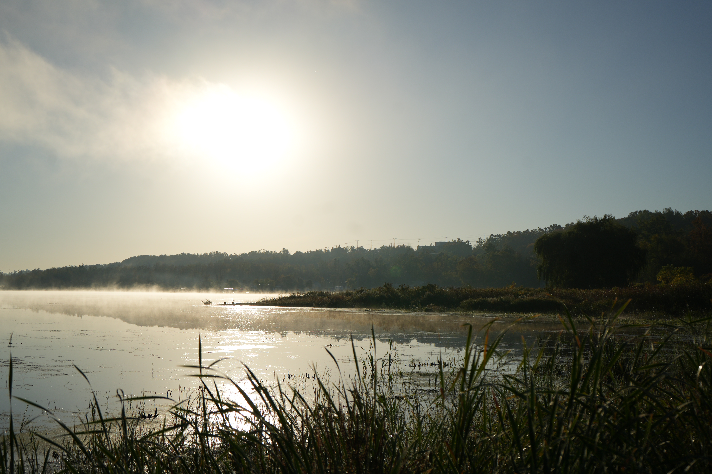

About Me

Hey there, welcome to my humble portfolio website, my name is Aeden P. Colynuck, I am a computer programming and analysis student in my first semester. I have previously graduated sports administration (graduated a deans list student), where I decided I was not done with school. I bring a strong thirst to problem solving and love getting into the gritty overtime sessions where you lose track of time.
I'm a bilingual French/English speaker, with previous tech experience having always grown up around it, or previous jobs like in the audio distribution industry, I believe I bring a certain edge that is hard to find in 2026.
p.s. I also really enjoy photography as it is one of my favorite things, all photos featured on the site were taken by me.
My Skills
- HTML5 & CSS3
- JavaScript (learning)
- Problem Solving
- Data Analysis
- Bilingual (English/French)
- Adaptability & Teamwork
- Inventory Management
- Customer Service
🤝 Let's Personalize Your Experience
📌 Project Reflection
What went well: Using a mobile-first approach with CSS Grid and Flexbox made the layout naturally responsive. The dark mode toggle with localStorage works seamlessly across all pages. Implementing JavaScript interactions (dark mode + personalized greeting + form validation + project details toggle) enhanced user engagement.
Challenges faced:Something that gave me trouble with this project was the doing the images, with it being something I am not very good at and have kind of avoided since the beginning of the semester. So i decided to challenge myself a little bit with the background making my day/night theme have an actual day/night cycle with photos from my one vault. This taught me a new skill and showed me that it is not difficult to add images anymore.
What I learned:I learned what it taked to create a functioning site, and that it is not always as simple as some people think it is, from coming up with the ideas on what to do, to coming up with how to implement them. I really enjoyed this project and look forward to the more to come in future semesters.